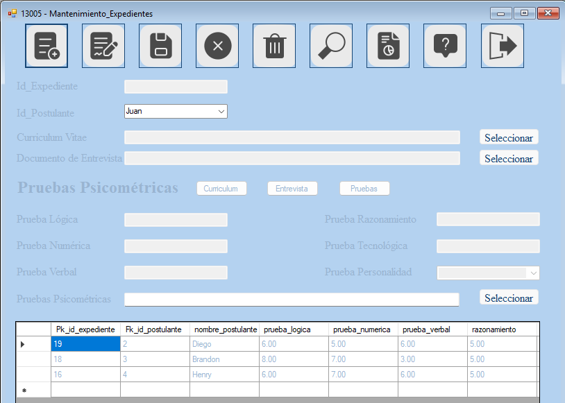
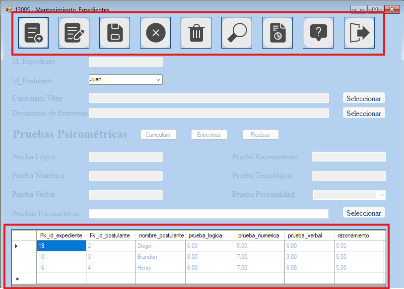
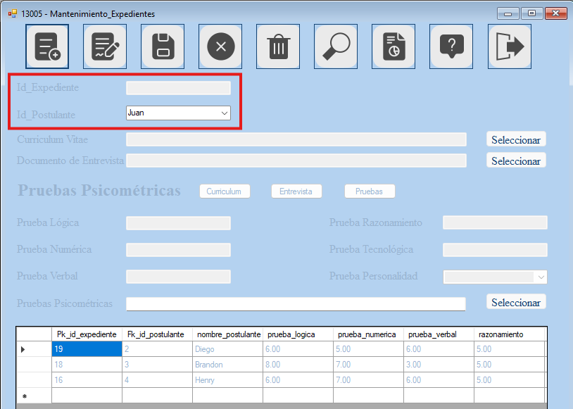
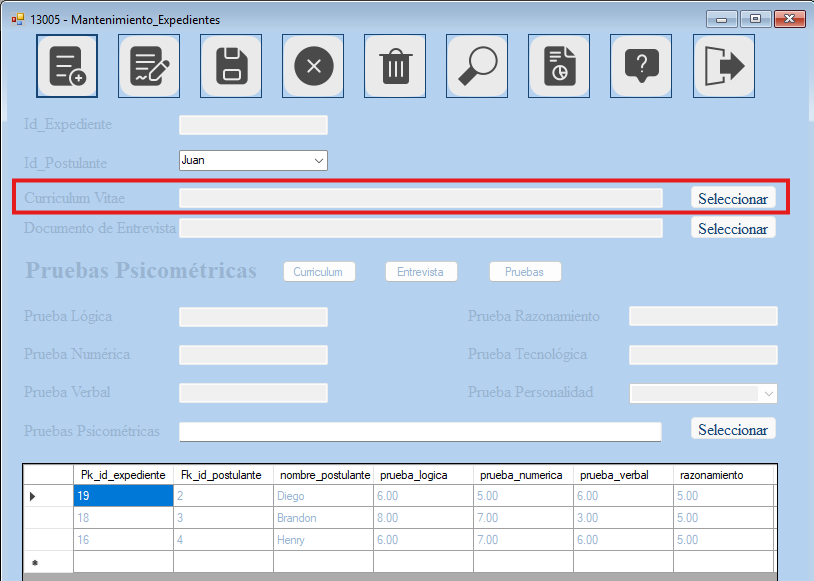
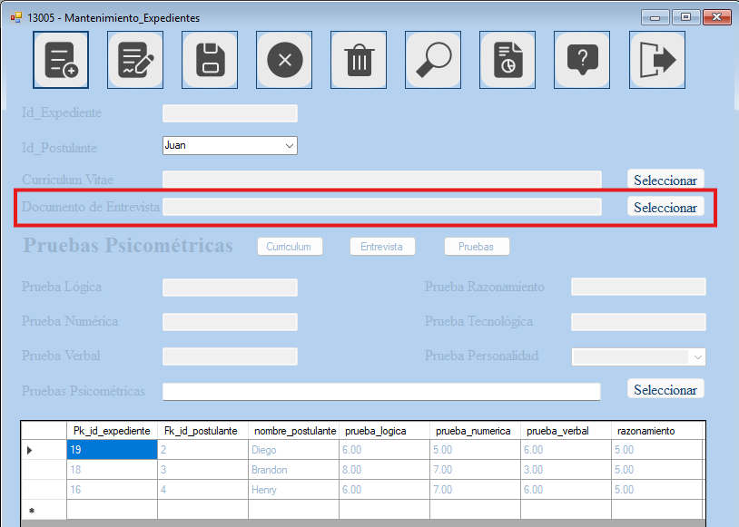
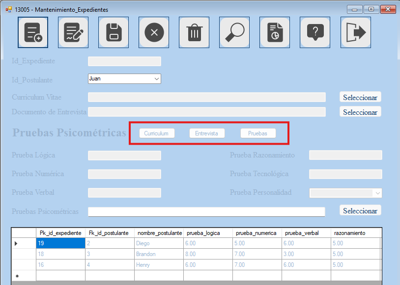
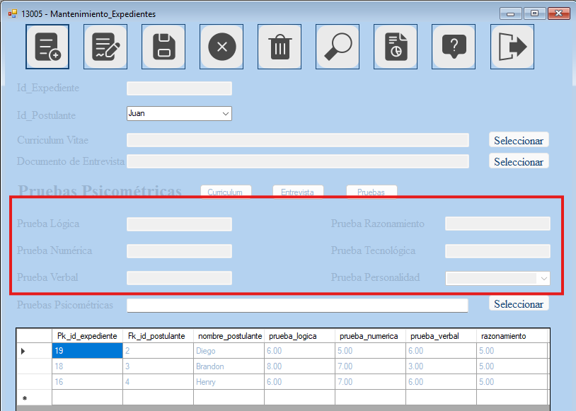
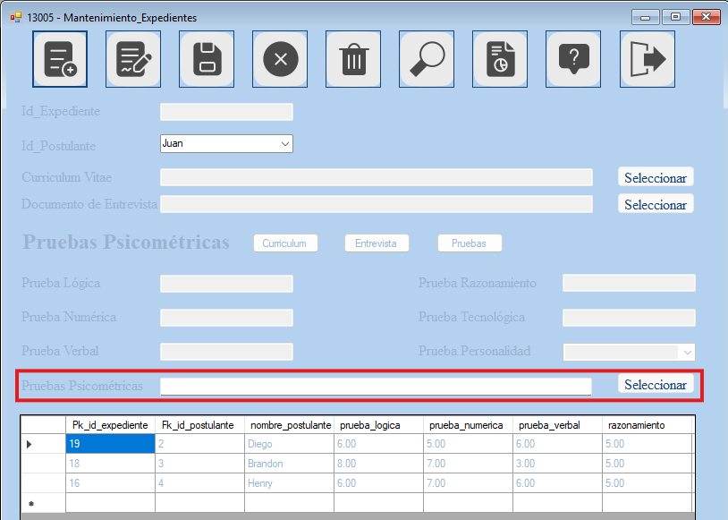
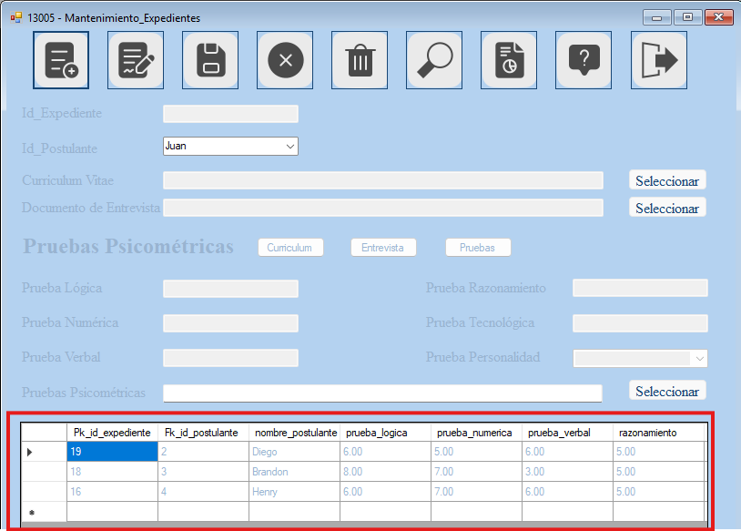

El formulario de expedientes permite crearle un expediente a los postulantes de un puesto.
La interfaz consta de los siguientes elementos

- Botones: Boton de ingresar, modificar, guardar, cancelar, eliminar, buscar, ver reporte, ver ayuda y salir.

- Postulante: Un campo desplegable (Combo Box) que permite seleccionar el nombre del postulante.

- Curriculum: Un campo que permite cargar un archivo correspondiente a un Curriculum.

- Entrevista: Un campo que permite cargar un archivo correpondiente a un documento de entrevista realizado.

- Entrevista: Un campo que permite cargar un archivo correpondiente a un documento de entrevista realizado.
- Botones de documentos: Cada botón permite visualizar el archivo que indica el nombre (en caso no exista un archivo aun indicará que no lo encuentra).

- Pruebas psicométricas: Incluye las pruebas lógicas, numéricas, verbales, de razonamiento y tecnológica las cuales son datos numericos, mientras que la prueba de personalidad se basa en el modelo MBTI en un menú desplegable.

- Pruebas psicométricas en documento: Un campo que permite cargar un archivo correspondiente al una vista más detallada de las pruebas psicométricas realizadas.

- Visualización de datos: Un data grid view que permite la visualización de los registros ingresados.
